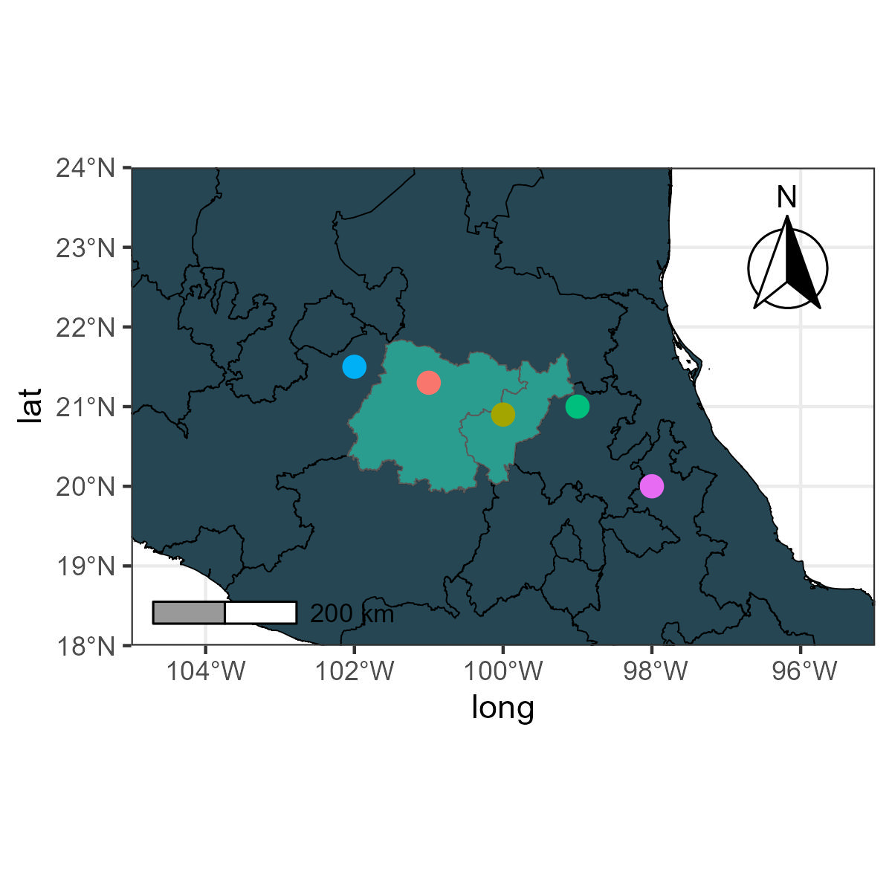

Colores en mapas
Cambiar colores en un en un mapa en ggplot2 y en QGIS.
Intro
Este post es acerca de como crear un mapa base de México, incluir puntos para sitios de muestreo y cambiar los colores de puntos en un mapa en ggplot y en QGIS.
Mapa
Para crear y modificar mapas siguiendo las instrucciones de este post necesitamos los siguientes paquetes:
library(raster)
library(sf)
library(ggplot2)
library(ggspatial)Si no los tienes instalados usa la función install.packages()
Existen shapefiles disponibles para México que se pueden descargar directamente en R.
- Para descargar los shapefiles, el paquete raster cuenta con la función getData.
Para crear un mapa:
- El paquete sf es la que utilizaremos para el manejo de los shapefiles.
- El paqueteggplot2 es crear las visualizaciones.
- El paquete ggspatial para agregar la escala.
Descargar datos
Lo primero seria descargar los datos usando la función getData.
Una vez cargados los datos, podemos hacer una selección de los estados que nos interesen.
Mapa base
Para crear un mapa centrado en estos estados se puede usar el siguiente código:
MapaBase<-ggplot()+
geom_sf(data= Mexico, fill='#264653', col='black')+
geom_sf(data= Queretaro, fill='#2a9d8f')+ #para resaltar estados
geom_sf(data= Guanajuato, fill='#2a9d8f')+ #para resaltar estados
annotation_north_arrow(location="tr",which_north="true",style=north_arrow_fancy_orienteering ())+ #Norte
ggspatial::annotation_scale(location = "bl",bar_cols = c("grey60", "white"))+ #Escala
theme_bw()+
coord_sf(xlim = c(-105,-95), #limites del mapa
ylim = c(18 ,24), #limites del mapa
expand = FALSE)
MapaBaseDentro de geom_sf el argumento fill es el color con el que se rellenaran los polígonos, lo puedes cambiar a como más te guste. En el mapa use códigos hexa-númericos que pueden ser encontrados en coolors, para más instrucciones ve aquí
Agregar un sitio
Ahora para agregar sitios, se deben especificar las coordenadas. En el ejemplo el argumento geom_point x y y son las coordenadas. En color elegí el color que le quiero dar a ese punto y lo escribí como código hexa-númerico (hex).
MapaSitios<-MapaBase+geom_point(aes(x=-100, y=21,
color='#e63946'))+ #elegir el color
theme(legend.position='none') #evitar la etiqueta
MapaSitiosAgregar varios sitios
Otra opción es que si tienes muchos puntos, es más práctico crear o cargar un data frame.
DatosInventados<-data.frame(long=c(-102,-101,-100,-99,-98),
lat=c(21.5,21.3,20.9,21,20))Puedes concatenar varios códigos hex y crear tu propia paleta.
paleta<-c("#f8ffe5","#06d6a0","#1b9aaa","#ef476f","#ffc43d")Agregar la paleta a las especificaciones del gráfico es dentro de geom_point, en color. Para hacer los puntos más grandes también puedes agregar el argumento size en geom_point.
MapaSitios<-MapaBase+
geom_point(data=DatosInventados,aes(x=long, y=lat,color=paleta),size=3)+
theme(legend.position='none') #evitar la etiqueta
MapaSitios
Para exportar el mapa, ve aquí
QGIS 🗺️
Ahora, para cambiar colores en QGIS.
Primero asumiré que tienes cargados tus datos en QGIS. Una vez cargados los datos, elige la capa, y ve a propiedades o properties.
here() starts at C:/Users/lerma/OneDrive/Documents/03Academico/02Proyectos-Postdoc/2025/1Programming/1Quarto/quarto_webpage
Ahora dale click en symbology. En la parte superior elige categorized, elige en value la columna de los nombres de los sitios o algo que los distinga entre si.

Dale enter al botón de classify. Dale Ok.

Ahora debes tener la opción de cambiar los colores de cada punto.
Dale click izquierdo y elige Edit symbol.

Ahora puedes darle doble click en el color y en la parte que dice html notation cambiarle el código hexagecimal por el que te interesa, puedes buscarlo en coolors.

Y listo!